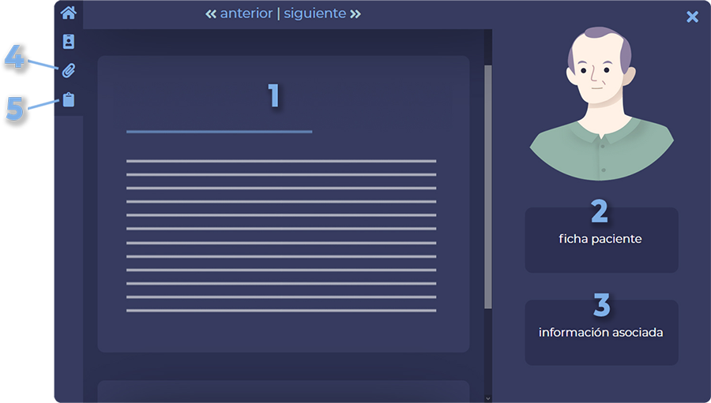

Cuidados de Inmunoterapia en Cáncer
Metodología
Finalidad y estructura del material
La finalidad de este material es proporcionar una herramienta didáctica práctica a través de siete casos clínicos reales de pacientes oncológicos en tratamiento con inmunoterapia y que presentan toxicidad relacionada.
El material consta además de siete módulos teóricos cuyo contenido está directamente vinculado con los diferentes casos clínicos presentados.
Los contenidos teóricos de los módulos referidos a los diferentes casos son los siguientes:
|
M1 |
Aspectos generales sobre la inmunoterapia. |
|
M2 |
Fundamentos de inmunología para entender cómo funciona la inmunoterapia. |
|
M3 |
Evaluación de la respuesta inmunológica. |
Módulos de Fundamentos Generales sobre la Inmunoterapia.
En estos módulos introductorios se fijan las bases para adquirir una noción general de los que es la inmunoterapia y para entender cómo funciona y por qué es importante en el tratamiento del cáncer.
|
M4 |
Manejo de fármacos inmunoterápicos. |
|
M5 |
Innovación del tratamiento en múltiples tumores. 5.1 Innovación en el tratamiento del Síndrome Linfoproliferativo B: Linfoma de Hodgkin clásico 5.2 Innovación en el tratamiento del Cáncer de Pulmón 5.3 Innovación en el tratamiento del Cáncer de Vejiga 5.4 Innovación en el tratamiento del Linfoma difuso de células B grandes 5.5 Innovación en el tratamiento de Carcinoma escamoso de Cabeza y Cuello 5.6 Innovación en el tratamiento del Tumor de Melanoma Maligno |
|
M6 |
Recomendaciones generales para el manejo de Toxicidad inducida por Inmunoterapia en Cáncer. |
|
M7 |
Toxicidad Inmunorelacionada. 7.1 Toxicidad Endocrina 7.2 Toxicidad Cutánea 7.3 Toxicidad Hepática 7.4 Toxicidad Digestiva 7.5 Toxicidad Neurológica 7.6 Toxicidad Renal 7.7 Toxicidad Pulmonar 7.8 Toxicidad CAR-T 7.9 Toxicidad Cardíaca |
Módulos Específicos sobre el Manejo de la Inmunoterpia.
En estos módulos se presentan las bases teóricas relacionadas con el Manejo de la Inmunoterapia en función de patología y toxicidad relacionada desencadanda que se presentan en los diferentes casos clínicos:
José
Arturo
María
Neus
Alicia
Federico
Julio
Aspectos técnicos y sistema de navegación
El material ha sido creado a partir de un diseño web responsive por lo que se puede visualizar desde cualquier dispositivo móvil.
El material presenta un diseño interactivo que favorece la navegación de forma que desde cualquier pantalla se pueda acceder a las diferentes informaciones, sin perder la visión de conjunto del mismo.
Desde la portada del Material Formativo accedemos a la información general del mismo (Objetivos, Metodología y Autoría) y encontramos el botón de acceso al contenido “Ir al curso”.
Al acceder se nos presenta un listado general de los 7 casos clínicos a través de los que se vehicula el aprendizaje del curso.
A continuación se pueden ver las opciones generales de navegación del material:
Dentro de cada caso clínico podrás encontrar los siguientes contenidos y recursos de apoyo:
|
1 |
Contenido del caso: a Desarrollo del caso clínico en el que se describe la aplicación del proceso enfermero en pacientes en tratamiento con inmunoterapia. b Preguntas de reflexión de carácter explicativo en las que se te invita a pensar y responder sobre lo que sucede en el caso, profundizando en el entendimiento de los resultados y sus causas. Estas preguntas proporcionan un feedback inmediato sobre la respuesta correcta. Se trata de preguntas de aprendizaje para estimular la reflexión, por lo tanto no se tendrán en cuenta en la calificación final del curso. c Conclusiones donde se presentan las principales ideas y aprendizajes sobre el cuidado de pacientes tratados con inmunoterapia que se derivan del caso. |
|
2 |
Ficha del paciente: apartado en el que puedes consultar la información relevante del paciente (sus antecedentes, pruebas diangósticas, tratamiento, valoración de la enfermería…) |
|
3 |
Información asociada: donde se facilita el acceso a los apartados del material teórico y recursos relacionados directamente con el caso clínico. |
|
4 |
Recursos: acceso a todos los recursos compartidos disponibles. |
|
5 |
Material teórico: acceso al índice completo de contenido teórico del curso. |

Los dos últimos recursos (4 y 5) son comunes a todos los casos clínicos por lo que siempre estarán presentes en la navegación de los mismos, de manera que podrás acceder a ellos siempre que lo desees.
Tanto el material teórico como los recursos se presentan en formato PDF lo que te va a permitir descargar el archivo en tu ordenador y revisarlo de manera off-line siempre que quieras.
Orientaciones para el estudio
Estás a punto de abordar el estudio de un material que esperamos será de una gran utilidad para la mejora de tu actividad profesional.
Con el fin de que obtengas un mayor rendimiento del material te ofrecemos a continuación algunas recomendaciones para sacar el máximo partido.
|
Este curso ha sido diseñado para que tu decidas el orden, ritmo, cuando empiezas y cuando acabas. Crea tu propio calendario teniendo en cuenta la gran flexibilidad del material y la ausencia de límites temporales. Esta planificación te ayudará a ser constante y no caer en la dejadez. |
||
|
El material cuenta con un esquema conceptual general del contenido y cada caso clínico con un esquema conceptual específico en función de la patología y la toxicidad desarrollada (M4, M5, M6 y M7). Seguir este esquema a la hora de abordar el material te ayudará a ordenar ideas y obtener una visión global del material. |
||
|
En los tres primeros módulos del apartado material teórico (M1, M2 y M3) se explican los conceptos y fundamentos básicos de la Inmunoterapia. Si no estás familiarizado con este tratamiento te recomendamos que empieces con la lectura de estos módulos teóricos antes de abordar los casos clínicos. |